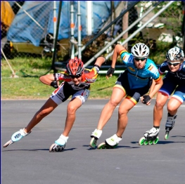
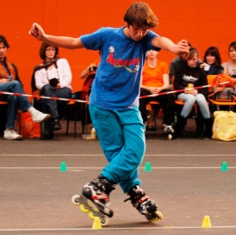
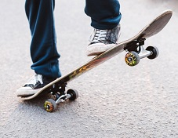
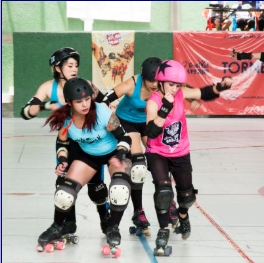
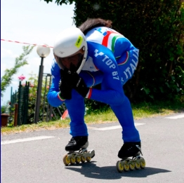
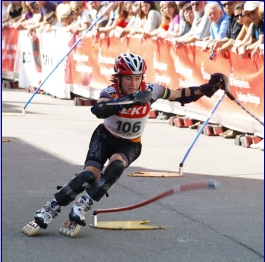

From Derby to Dancing: A Guide to the Types of Quad Roller Skates
Speed skating
While inline speed skating is slightly more common, quad speed skates are quite popular as well. Just like a running shoe, speed skates are designed to make them ideal for speed, with a close-to-the-foot fit that more closely resembles a shoe than many other skate boots. The main goal of a speed skate is, well, speed! In order to make the skate lighter weight (and thus faster), a speed skate will have less padding and a lightweight plate, making it great for long distances and intense training sessions. The boot will usually be low-cut under the ankle bone to allow for a wider range of movement; flexibility and agility are key when maneuvering at top speed!
Inline Freestyle
A type of roller sport in which an athlete on roller skates performs a sequence of various technical and artistic elements to music on a flat horizontal platform lined with lines of special small cones ("chips", "glasses"). Outwardly, it looks like roller skating, figure skating and slalom at the same time. At the competition, participants are invited to demonstrate their program in a set time - 1 minute 30 seconds. The program is shown on three parallel tracks of 20 cones.
The marks are given by four judges, according to such qualities as:
- Technique - the complexity of elements and transitions between them, the speed of execution of elements.
- Style - the beauty of performing elements and transitions, evaluating additional elements, such as twines, stretching, etc.
- Gestion, management - assessment of the required elements, the compliance of the program with the music.
Skateboarding
Skateboarding, form of recreation and sport, popular among youths, in which a person rides standing balanced on a small board mounted on wheels. Considered one of the so-called extreme sports, skateboarding as a professional sport boasts a range of competitions, including vertical and street-style events. Vertical skating (also called “vert”) features aerial acrobatics performed in half-pipes that were originally built to emulate empty swimming pools. Street style features tricks performed in a real or simulated urban environment with stairs, rails, ledges, and other obstacles. Skateboarding has developed as a youth subculture that emphasizes creativity and individuality. It is an alternative to mainstream team sports, which are more formally organized and largely controlled by adults.
Roller derby
Roller derby is a pretty intense contact sport (on wheels!) so not only is it action-packed and fun to watch, but it’s also a bit rough on skates and skaters. Derby skates may look a lot like speed skates or jam skates, but they typically have much more padding to protect the foot from impact with other skaters and the track. Roller derby skates often have a velcro strap in addition to the traditional laces to ensure a locked-down, secure fit.
Inline downhill
One of the types of high-speed roller sports in which the movement takes place down from a long asphalt slope. The peculiarity of such a downhill descent is that the roller does not have to make efforts to accelerate and maintain speed, concentrating only on controlling its movement. The downhill trail has an average incline of 7-13% and includes several sharp turns. The average speed when descending is about 60 km / h, but on some sections of the route the speed can reach 110 km / h. Downhill is especially popular in cities and on highways, where the terrain creates large differences in elevation. Since 2000 it has been recognized by the International Rollerball Federation as one of the rollerball sports.
Inline Alpine
A young fast-growing type of speed roller sport, which is analogous to the classic discipline of downhill skiing AlpineSki, on an asphalt track. A roller skater moves between the goalposts on a steep incline as quickly as possible. In competitions, competitors go down on roller skates along an asphalt track with a 6-18% downward incline, between flexible sticks. Inline Alpine includes the following disciplines: Inline Alpine Slalom, Inline Alpine Giant Slalom, Inline Alpine Parallel-Slalom. In 2010, the first World Cup in this discipline of roller sport was held.